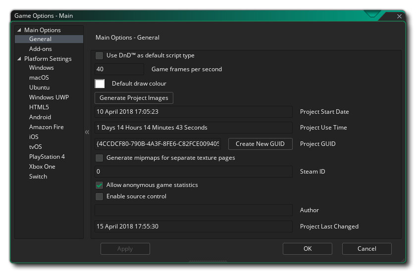
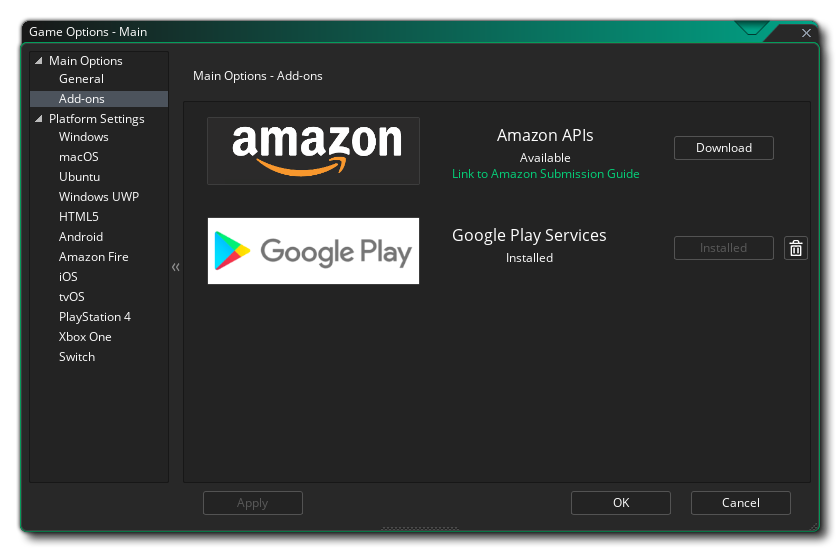

Die Spieloptionen sind in zwei Abschnitte unterteilt: Hauptoptionen und Plattformeinstellungen. Details zu den Hauptoptionen finden Sie in den folgenden Abschnitten:

Im Fenster Allgemeine Optionen können Sie bestimmte Dinge festlegen, die das Spiel unabhängig von der Plattform beeinflussen, auf der es ausgeführt werden soll. Das Fenster hat die folgenden Abschnitte:
- Verwenden Sie DnD™ Als Standard-Skripttyp: Wenn diese Option aktiviert ist, werden alle neuen Skripts und Objektereignisse mit dem DnD™ -Editor und nicht mit dem Code-Editor geöffnet.
- Spiel-Frames pro Sekunde: Dieser Wert legt das Limit für die Anzahl der Frames pro Sekunde fest, die GameMaker Studio 2 beim Ausführen von Spielen versuchen soll. Dieser Wert gibt an, wie oft die Spielschleife in einer Sekunde ausgeführt wird (eine einzelne Spielschleife wird als einzelner "Frame" betrachtet) und ist auf einen Standardwert von 30 festgelegt, obwohl oft auch 60 verwendet wird. Es gibt viele Argumente dafür, welche Raumgeschwindigkeit ideal ist, aber die tatsächliche Antwort hängt von der Art des Spiels, der Größe des Raums, der Anzahl der Instanzen und der Intensität des Codes ab. Wenn Sie zum Beispiel einen großen Raum und eine Zimmergeschwindigkeit von 30 haben, kann das Spiel "abgehackt" erscheinen, je größer der Bereich ist, den Sie betrachten, desto leichter ist es für das Auge, niedrige Raumgeschwindigkeiten wahrzunehmen, aber wenn das Spiel Wenn die Raumgeschwindigkeit auf 100 erhöht wird, kann das Spiel aufgrund des Verarbeitungsaufwands "nacheilen", da die fps fallen. Passen Sie also auf diesen Wert auf und versuchen Sie ihn immer an das anzupassen, was Ihr Spiel benötigt.
- Standard- Zeichenfarbe: Die Standardfarbe für das Zeichnen von Text oder Foren (und anderen Dingen), wenn mit Code keine Farbe festgelegt wurde.
- Generate Project Images: Wenn Sie auf diese Schaltfläche klicken, wird das Project Image Generator Tool geöffnet.
- Projektstartdatum: Das Datum, an dem das Projekt initiiert wurde.
- Projektnutzungszeit: Die Zeitdauer, die seit dem Start des Projekts verstrichen ist.
- Projekt-GUID: Dies ist die eindeutige Kennung, die für jedes Projekt in GameMaker Studio 2. Wenn Sie dies ändern möchten, können Sie auf die Schaltfläche Create New GUID klicken, um eine neue GUID zu erstellen.
- Mipmaps für separate Texturseiten generieren: Mit dieser Option erstellt GameMaker Studio 2 Mipmaps für die Sprites, die in den Textureinstellungen des Sprite-Editors die Option Getrennte Texturseite markiert haben. Das Aktivieren von Mipmapping bedeutet, dass die ursprüngliche Texturseite für das Sprite skaliert und in mehrere Auflösungen innerhalb der Texturdatei gefiltert werden soll. Dies ist normalerweise deaktiviert, aber wenn Sie Ansichten zum Vergrößern oder Verkleinern großer Bereiche des Spielraums verwenden oder wenn Sie mit einem 3D-Spiel arbeiten, möchten Sie dies möglicherweise aktivieren und dann mithilfe der Mipmapping-Funktionen anpassen, wie Das Spiel beschäftigt sich mit den verschiedenen Mipmap Levels. Beachten Sie, dass, wenn Sie nicht das Markieren von Sprites, wie mit einzelnen Textur - Seiten Sie noch Mipmapping auf einer Pro-Textur Gruppenbasis von den ermöglichen können Texture Group Manager. Diese Option ist standardmäßig deaktiviert.
- Steam ID: Wenn Sie ein Spiel erstellen, das über Steam verteilt werden soll, müssen Sie hier die Steam App-ID angeben. Stellen Sie sicher, dass Sie den Pfad zum Steam works SDK in den Plattform-Einstellungen hinzugefügt haben, wenn Sie diese Option verwenden, und vergewissern Sie sich, dass alles im Steam Works-Dashboard korrekt eingerichtet ist.
- Anonyme Spielstatistiken zulassen: Aktiviert oder deaktiviert das Senden von GameMaker Studio 2 Spielanalysedaten an YoYo Spiele, sowohl von der IDE als auch von den von Ihnen erstellten Spielen. Wenn aktiviert, werden anonyme Daten über den PC gesendet, der das Programm / Spiel ausführt (Dinge wie Monitorgröße, CPU, GPU, Speicher usw.), und die endgültigen ausführbaren Dateien senden auch Daten darüber, wie das Spiel aufgerufen wird. Diese Daten werden gesammelt, damit YoYo Games ihre Dienste besser auf die Bedürfnisse der Nutzer YoYo Games kann und YoYo Games hofft, diese Daten in Zukunft den Entwicklern zur Verfügung zu stellen (ähnlich wie Steam mit ihrer Steam Software Survey ). Umfassende Einzelheiten finden Sie in Teil 6 des Abschnitts Informationen, die wir von der Datenschutzrichtlinie von YoYo Games sammeln. Diese Option ist nur für Benutzer mit einer kostenpflichtigen Lizenz (Desktop, Mobile, HTML5, UWP oder Konsole) verfügbar, und Benutzer mit der Testlizenz senden immer anonyme statistische Daten.
- Quellcodeverwaltung aktivieren: Wenn Sie möchten, dass das Projekt unter SCM (Source Control Management) steht, müssen Sie dies überprüfen. Es ist standardmäßig (siehe ab hier für weitere Informationen über die Quellcodeverwaltung).
- Autor: Der Name des Spielautors (oder Herausgebers oder Studios).
- Projekt zuletzt geändert: In diesem Abschnitt wird nur der Datums- / Zeitstempel für das letzte Mal angezeigt, an dem das Projekt geändert wurde (dies ist nicht bearbeitbar).

GameMaker Studio 2 müssen bestimmte Add-ons als Erweiterungen für Ihr Projekt installiert werden, wenn Sie erweiterte Funktionen wie Bestenlisten oder In-App-Käufe auf bestimmten Plattformen verwenden möchten. Mit einem Klick auf den " Download " -Button wird die Erweiterung heruntergeladen und im aktuellen Projekt für Sie installiert.
In der Ressourcenstruktur stehen Ihnen weitere Spieloptionen zur Verfügung, abhängig von den Zielplattformen, die für die Lizenz verfügbar sind und nicht alle verfügbar oder sichtbar sind. Die folgenden Plattformoptionen sind verfügbar: